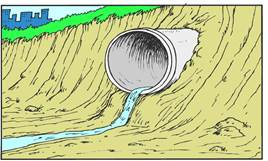

Question 13
Calcium
hydroxide, Ca(OH)2, has many uses. One significant
use is in sewage treatment where it aids in the removal of small particles from
water. Calcium hydroxide is particularly useful because of its low solubility
in water.

The Ksp of calcium hydroxide is 5.02 ´ 10-6 at 25 °C.
Calcium
hydroxide dissociates as follows:
Ca(OH)2(S)  Ca2+(aq) + 2 OH-(aq)
Ca2+(aq) + 2 OH-(aq)
|
What is
the concentration of Ca2+ and OH- ions at 25 °C? |